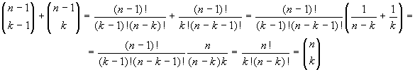
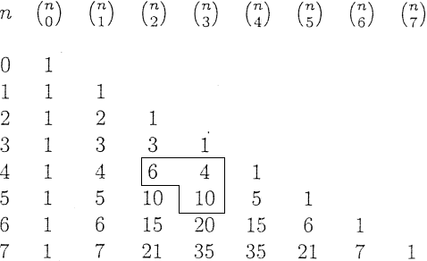

Calcolo Combinatorio
Scopo di questo paragrafo è rispondere alla domanda: quanti sono?. Ossia saremo interessati a contare gli oggetti di certi insiemi finiti. Diamo alcuni esempi.
1.6.1 ESEMPI
Uno studente vuole sedersi durante cinque giorni di lezione con cinque compagni diversi (ogni banco ha due posti). Quante sono le possibilità di scelta? Il primo giono ha cinque possibilità di scelta, il secondo giorno ne ha quattro, il terzo ne ha tre, e così via sino all'ultimo giorno, in cui ha un'unica possibiltà. In totale il numero di possibili scelte è
5 ⋅ 4 ⋅ 3 ⋅ 2 ⋅ 1 = 120
Quante targhe si possono formare utilizzando quattro cifre seguite da tre lettere (scelte tra 26)? Ci sono 10 ⋅ 10 ⋅ 10 ⋅ 10 possibili numeri a quattro cifre. Ci sono 26 ⋅ 26 ⋅ 26 possibili modi utilizzare tre lettere. In tutto quindi il numero di targhe che si possono ottenere è:
104 ⋅ 263 = 17576 ⋅ 104
Per risolvere questo genere di problemi è conveniente introdurre alcune notazioni:
Dato un intero positivo n, si indica con n!, e si legge n fattoriale, il seguente intero:
n! := n ⋅ (n - 1) ⋅ (n - 2) ⋅⋅⋅ 3 ⋅ 2 ⋅ 1; 0! := 1
Ad esempio 6! = 6 ⋅ 5 ⋅ 4 ⋅ 3 ⋅ 2 ⋅ 1 = 720.
Alcune proprietà del fattoriala, di facile verifica sono:
n! = n ⋅ (n − 1)!
n!/(n−k)! = n ⋅ (n−1) ⋅ (n−2) ⋅⋅⋅ (n−k+1) if 0 < k < n.
Si osservi come la funzione fattoriale cresca molto rapidamente. Nei calcoli, quando si ha a che fare ad esempio con quozienti di fattoriali, conviene procedere alla loro cancellazione, tenendo conto della (C.3):
Ad esempio se si deve dividere 1000! per 997! conviene scrivere:
1000! / 997! = 1000 ⋅ 999 ⋅ 998 ⋅997
Dati due insiemi A e B con n elementi ciascuno, il numero di corrispondenze biunivoche tra A e B è precisamente n!. Infatti, per individuare un'applicazione f basa assegnare i valori f(x1), f(x2), f(x3),..., f(x3), dove x1, x2, ..., xn, sono gli n elementi di A. Data un'applicazione biettiva arbitraria f da A a B, f(x1) piò essere uno qualunque degli n elementi di B, cioè può assumere n valori, f(x2) può coincidere con uno qualsiasi degli elementi di B purché diverso da f(x1) (per l'iniettività), quindi può assumere (n-1) valori, e così via. Si possono fare quindi in tutto n ⋅ (n - 1) ⋅ (n - 2) ⋅⋅⋅ 2 ⋅ 1 = n! scelte, e scelte diverse danno origine ad applicazioni biunivoche diverse tra A e B.
Nel caso in cui sia A = B, le corrispondenze biunivoche di A in sé prendono il nome di permutazioni. L'insieme di tutte le permutazioni di un insieme X si indica con 𝓢(X). Se si prende in corrispondenza la composizione di applicazioni, la composizione di elementi di 𝓢(X). Inoltre tale composizione è associativa, esiste un elemento iX neutro rispetto alla composizione, tale cioè che iX ∘ f = f ∘ iX = f per ogni f ∈ S(X). Inoltre dato comunque un elemento f ∈ 𝓢(X) esiste l'applicazione inversa f-1 che sta ancora in 𝓢(X), tale che f ∘ f-1 = f-1 ∘ f = iX. L'insieme 𝓢(X) rispetto alla composizione di applicazioni ha una struttura algebrica che prende il nome di gruppo. Tale insieme rivestirà un'importanza fondamentale nel seguito, quando studieremo in dettaglio i gruppo.Dati due insiemi A e B di n e m elementi rispettivamente, il numero di applicazioni tra A e B è mn. Ad esempio se A = {a1, a2, a3} e B = {b1, b2}, tutte le possibili applicazioni tra A e B sono le 23 seguenti:
a1 → b1 a1 → b1
f1: a1 → b1 f2: a1 → b1
a3 → b1 a1 → b1
a1 → b1 a1 → b2
f3: a2 → b2 f4: a2 → b1
a3 → b1 a3 → b1
a1 → b2 a1 → b2
f5: a2 → b2 f6: a2 → b2
a3 → b2 a3 → b1
a1 → b2 a1 → b1
f7: a2 → b1 f8: a2 → b2
a3 → b2 a3 → b2
Numero di sottoinsiemi
Supponiamo di voler contare quanti sono i sottoinsiemi con k elementi di un insieme A (k ≤ n). Conviene contare prima quante sono le k-ple ordinate di elementi distinti di A: si noti che due k-ple che hanno gli stessi elementi, ma in ordine diverso, sono da considerarsi diverse. Ora, il primo elemento della k-pla si può scegliere in n modi, il secondo in n-1, l'ultimo, ossia il k-esimo, n - k + 1 modi. Le k-ple ordinate sono quindi i numero n ⋅ (n - 1) ⋅⋅⋅ (n - k + 1). Ora, ogni sottoinsieme di A con k elementi ha esattamente k! ordinamenti, quind corrisponde a k! k-ple distinte. Se si vuole pertanto il numero di sottoinsiemi di A con k elementi, si dve dividere per k! il numero totale di k-ple. Quindi il numero di sottonsiemi con k elementi di un insieme con n elementi è dato da:
n(n − 1) ⋅⋅⋅ (n − k + 1)/k!
Ebbene, tale numero, conta il numero di sottoinsiemi con k elementi che si possono formare partendo da un insieme con n elementi; Per esempio se abbiamo quattro oggetti dell'insieme {1, 2, 3, 4}, ci saranno (4 2) = 6 modi per scegliere 2 elementi tra questi, ossia
{1, 2}, {1 , 3}, {1, 4}, {2, 3}, {2, 4}, {3, 4}
Rrappresenta inoltre le combinazioni di n elementi a k a k elementi, prende il nome di coefficiente binomiale e si indica con il seguente simbolo:
quindi per la (C.3)
Dalla definizione e dal significato di (n k) appare chiaro che
e che
infatti
Quest'ultima relazione permette di calcolare i numeri (n + 1 k) a partire dai valori (n k) e (n k−1). In tal modo si costruisce il cosiddetto trianolo di Tartaglia (o di Pascal); in cima al triangolo si pone (0 0)=1.
Il motivo per cui gli interi (n k) prendono il nome di coefficienti binomiali è che essi compaiono come coefficienti nella formula che dà lo sviluppo della potenza di un binomio (a + b)n:

Esaminiamo i primi valori di n:
(a + b)0 = 1a0b0
(a + b)1 = 1a1b0 + 1a0b1
(a + b)2 = 1a2b0 + 2a1b1 + 1a0b2
(a + b)3 = 1a3b0 + 3a2b1 + 3a1b2 + 1a0b3
In generale, sviluppando la potenza
(a + b)n = (a + b) ⋅ (a + b) ⋅ ... ⋅ (a + b)
si ottiene una somma di termini della forma an-kbk. Se in un fattore y compare k volte, allora in quello stesso fattore a compare n − k volte. Il coefficiente di ogni termine sarà il numero di modi di scegliere k degli n binomi (a+b), ossia il coefficiente binomilae (n k). Ad esempio in (x + y)3 = (x + y)(x + y)(x + y), there are 3 ways to form the term 3x^2y si possono prendere le due x:
dai primi due binomi;
Dagli ultimi due binomi
dal primo e ultimo binomio
«Defective Verbs Index Proprietà dei Calcolo Combinatorio»